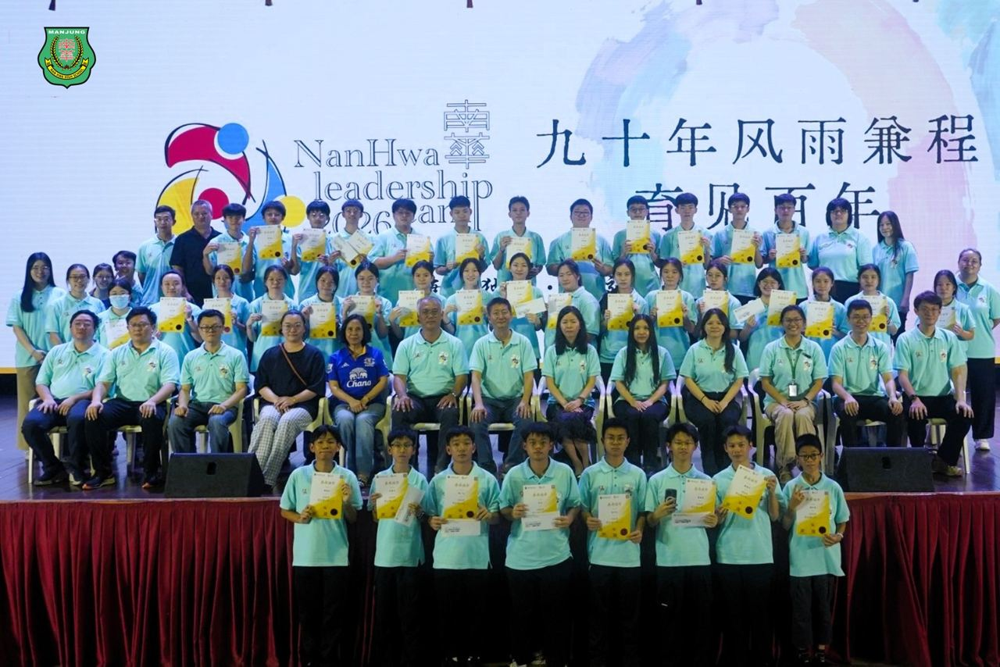
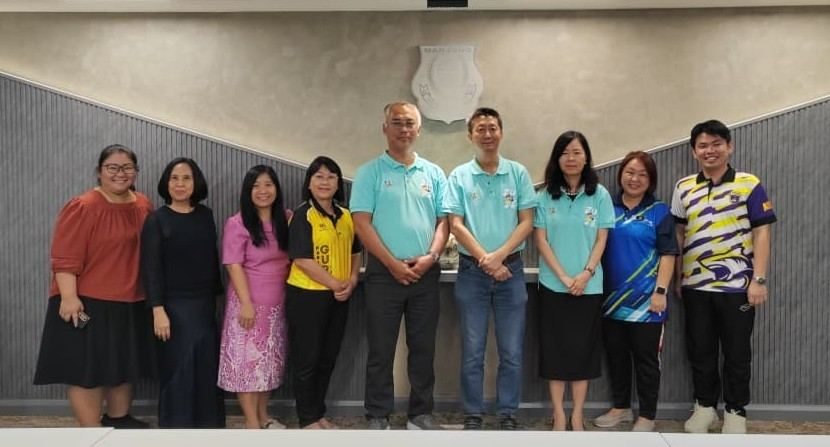
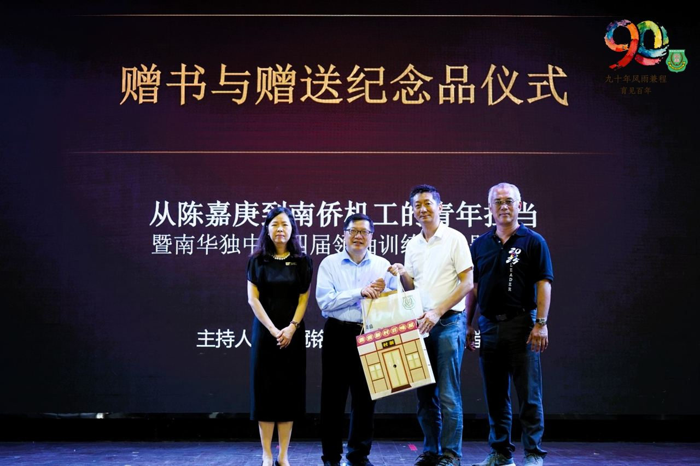
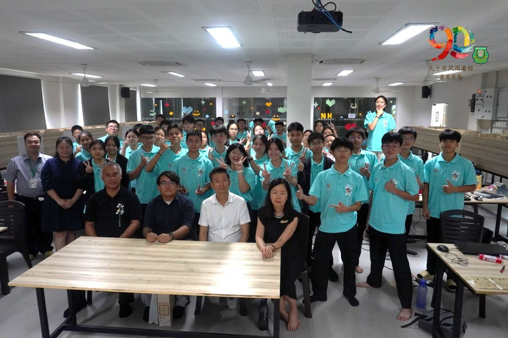
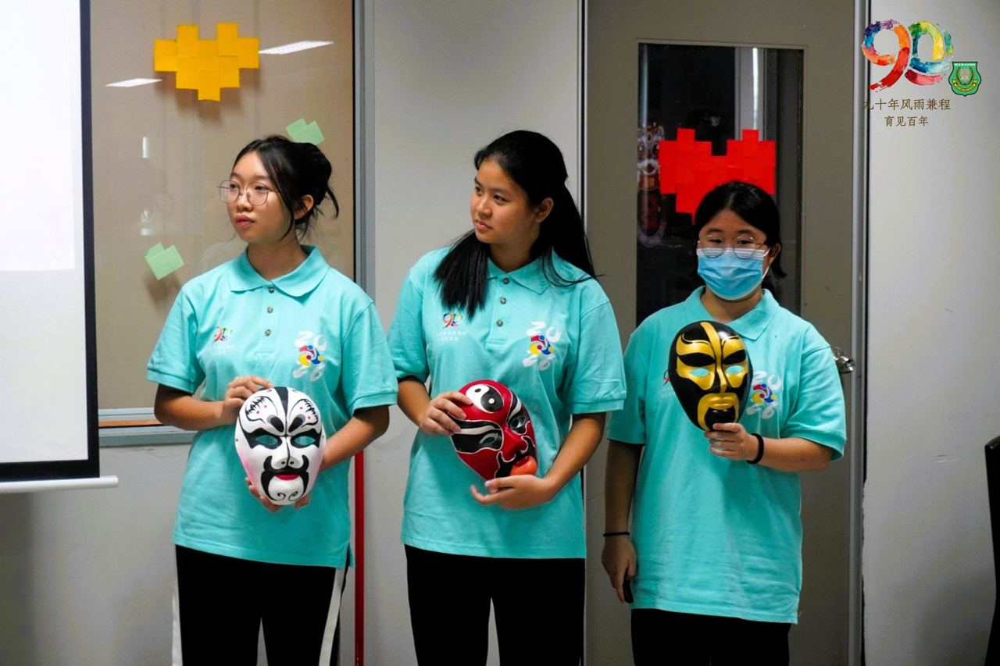
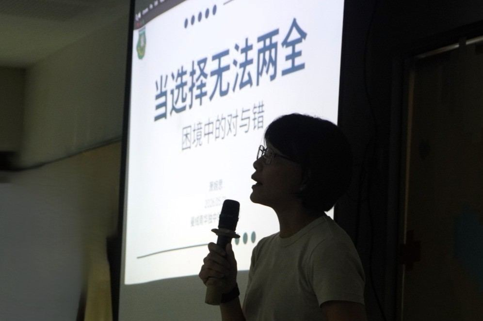
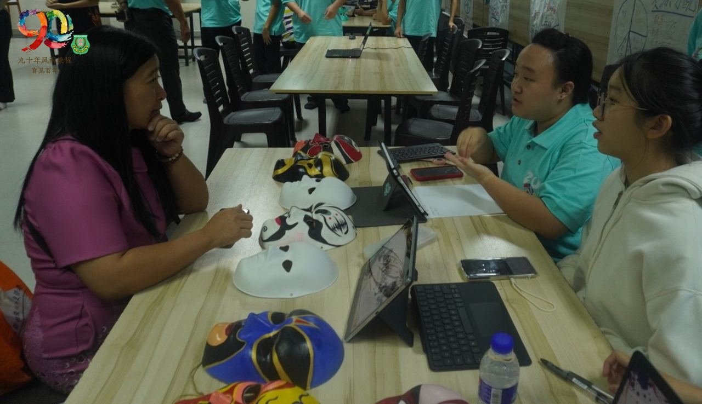
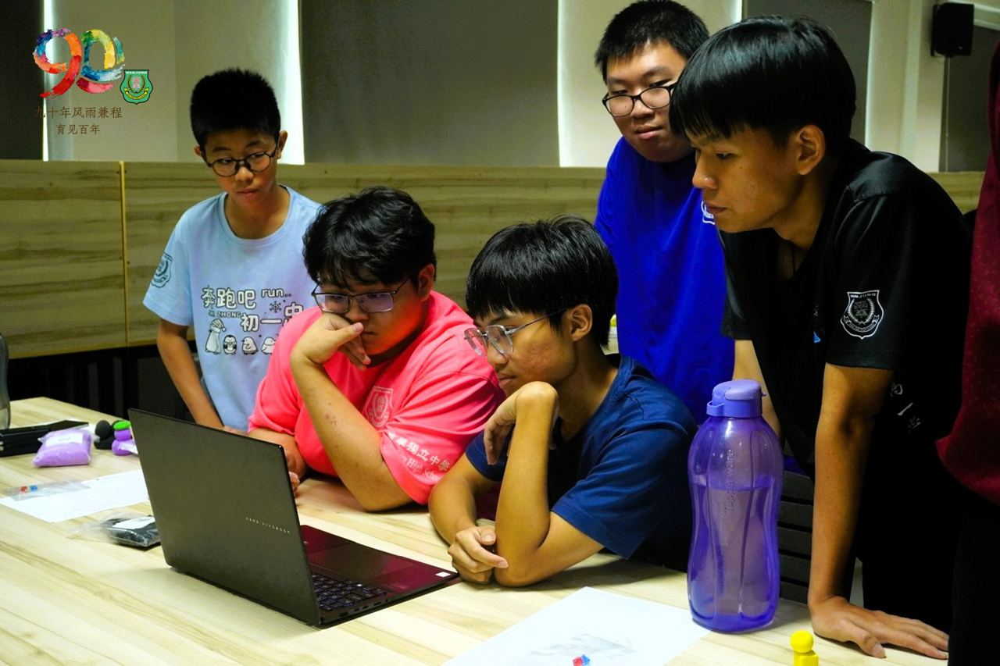

南华独中第四届高阶领袖营“承光篇” 落幕
南华独中第四届高阶领袖营“承光篇” 落幕
汇聚名师智慧 全方位淬炼未来领袖认知与格局
（曼绒26日讯）南华独中第四届学生领袖训练营（高阶版·承光篇）于5月21日至23日举行，历经三天两夜的深度学习，四十余名南华学生领袖在九位讲师的倾心引领下，经历了一场从认知、格局到灵魂的全方位淬炼。
本届训练营立足四大宗旨：提升领袖素养与组织能力；培养团队协作与创新意识；觉醒社会责任感，成为懂得回馈社会的领袖；以及打造有文化自信、关注华教与华社课题的未来领袖。
营会由顾问颜登逸董事长以讲座《认知、格局与进化力》揭幕。他提出"进化力三元模型"：进化力等于认知、格局与开悟三者的乘积，任何一项为零即归零。他警示营员："未来被时代淘汰的，并非成绩垫底，而是停止进化、无法适应新挑战的人。"同日，萧婉思博士则是在《当选择无法两全：困境中的对与错》环节中，主持了一场互动式哲学思辨活动，以火灾情境引导营员在效益主义与义务论之间拉扯，交出话语权让学生自主发言，成为“思考思维实验室“的主角。
营会隔日迎来了南方大学学院中文系安焕然教授以《从陈嘉庚到南侨机工的青年担当》向全校师生开放讲座，将华教文化自信的根脉深植于每一位南华人心中。紧接的环节则是萧婉思博士继续主持《谁该分到最大的蛋糕？——公平、资源与正义的思辨课》，引入罗尔斯"无知之幕"，营员化身制度设计者，体验公平的多维复杂性。稍作休息后便是历史文化研究者黎达铨硕士以《看到问题背后的问题——历史·文化及领袖思维》引导营员以考古视角追问本质。
当天下午的重头戏，是社会责任行动计划2.0发表会与招标会——来自曼绒县周边8所华小及1所淡小的校方代表莅临聆听，营员团队则是分成8组逐一上台呈现围绕着“文化传承”与“艺术传播”两大主题的方案，麦克风刚放下随即现场公开对接招标。本校董事校长与各华小代表在发表会后举行交流会，各方为即将开展的2026年度社会责任行动计划2.0作建教商谈，并且宣布对接仪式将于不久后召开。
营会的终日首场活动由校长陈丽冰博士亲主《从独中精神看文化自信与公共责任》，借由引导营员代入情境后体验华教精神守护与传承的使命；张美香老师随后以《未来领袖的说话力》带领营员探索表达五层次，直至最高境界"会点亮别人"；何添胜董事总务则以《厚德载物》收结上午讲座，从中华经典阐述惟有德配其位，方能驾驭才华与格局。
训练营的尾声是由颜登逸董事长、何添胜董事总务与陈丽冰校长共同主持"总结与复盘"完整梳理四届脉络：起航篇（2023）→成长篇（2024）→使命篇（2025）→承光篇（2026），宣告以四年为一培训周期的学生领袖训练营正式画下句号。
董事长颜登逸先生以"拼图"作为结语，提醒营员谨记所学，因为"训练营就像为大家提供拼图的大框架，主讲人亲授的高格局思维让你在学习到新事物时可以很快就能知道它适合落在人生拼图的特定位置。"
校长陈丽冰博士则是期许营员在接受领袖训练后"做任何决定前都要顾及对社会、人群与环境的影响，成为有真正格局的领袖。"
董事总务何添胜先生则是劝勉未来领袖必须“忠于自己内心深处真实的声音，遵循声音的引导，让自己成为有担当的领袖”。
结营不是终点。这批经系统磨砺的青年领袖，将整装出现在即将到来的社会责任行动计划2.0正式对接、文艺大汇演以及2026年马来西亚华文独中AI专题研习营暨机器人竞赛等场合，以行动证明四年培育的成果。
承光篇，以光承光，以人育人。
【学生领袖训练营讲座】
1）顾问颜登逸董事长《认知、格局、开悟与进化力》
2）萧婉思博士《当选择无法两全：困境中的对与错》
3）安焕然教授《从陈嘉庚到南侨机工的青年担当》
4）萧婉思博士《谁该分到最大的蛋糕？——公平、资源与正义的思辨课》
5）黎达铨硕士《看到问题背后的问题——历史·文化及领袖思维》
6）校长陈丽冰博士《从独中精神看文化自信与公共责任》
7）张美香老师 《未来领袖的说话力》
8）何添胜董事总务《厚德载物》
*本校将陆续针对各场讲座作专题报道，敬请持续关注。
营会出席者包括有董事长颜登逸先生、董事总务何添胜 、董事副总务林道祥 、校长陈丽冰博士，讲师萧婉思博士、安焕然教授、黎达铨硕士、张美香老师及各组工委老师。







